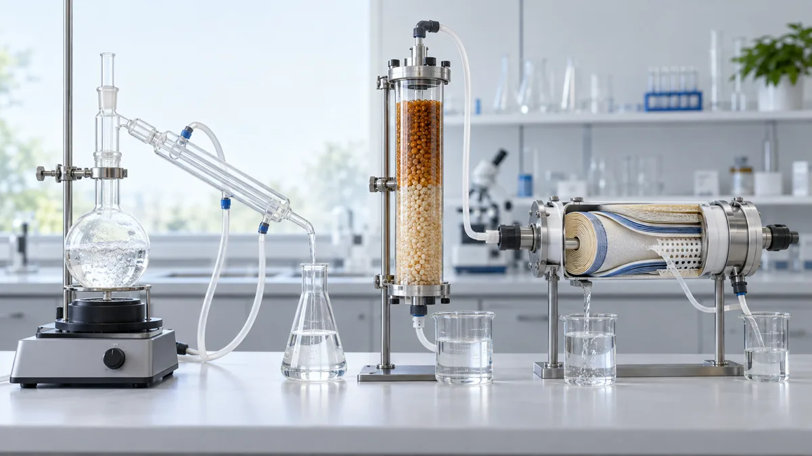
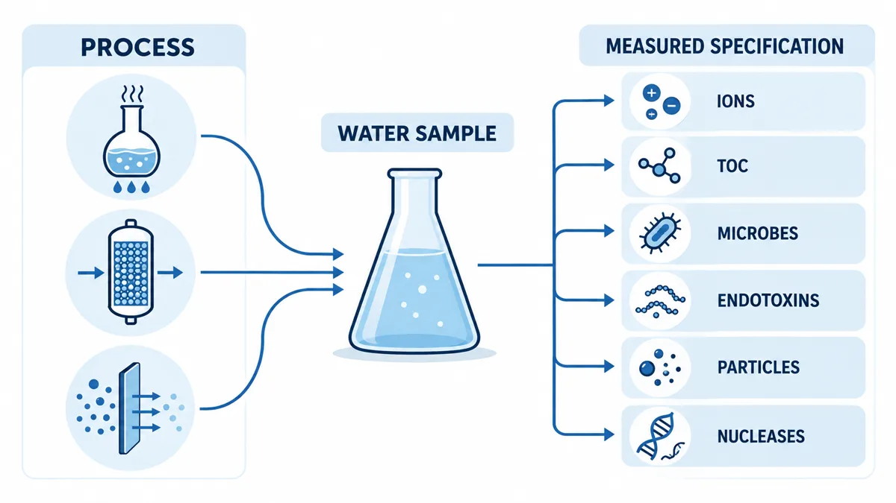
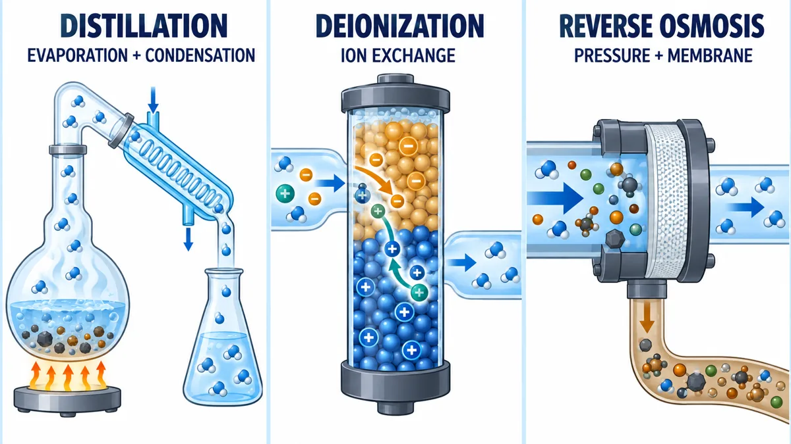

Distilled vs Deionized vs Reverse Osmosis Water for Laboratory Use
Process names describe how water was treated — compare the three by what they remove, what they leave behind and what your method actually specifies
More Engineering Guides ↗
Which should your laboratory use: distilled, deionized or RO water?
Distilled, deionized and RO water are process names, not quality guarantees. Distillation separates nonvolatile contaminants through evaporation and condensation, deionization removes charged ions, and reverse osmosis reduces a broad contaminant load through a membrane — and each leaves different contaminants behind. Choose by the measured specification the method requires and verify quality at the point of use, not by the process name.
On this page
- What is the short answer?
- Process name is not the same as water grade
- How distillation works
- What deionization removes
- What reverse osmosis removes
- Comparison table
- Can one replace another in a method?
- How should a laboratory choose?
- Conductivity and resistivity
- Combined systems
- Frequently asked questions
- A defensible selection record
Distilled, deionized and reverse-osmosis water are not automatically interchangeable. The names describe how water was treated, not a complete guarantee of the water that reaches an experiment. Distillation separates water through evaporation and condensation, deionization removes charged ions, and reverse osmosis uses a membrane to reduce a broad contaminant load. The correct choice depends on the limits for ions, organics, particles, microorganisms, endotoxins, gases or nucleases—and on whether the water continues to meet those limits at the point of use.
What is the short answer?
- Choose distilled water when the governing procedure explicitly requires it or when validated distillation performance matches the required specification.
- Choose deionized water when ionic contamination is the main concern, but verify any additional requirements separately.
- Choose RO water when broad contaminant reduction or feedwater preparation is required, while recognizing that RO alone may not meet critical analytical specifications.
- Use a combined treatment train when the application requires simultaneous control of several contaminant classes.
If a method says “distilled water,” do not replace it with DI water merely because the DI water has high resistivity. If an instrument specifies conductivity, TOC, microbial or particle limits, compare the actual certificate and measurements with those limits instead of relying on the process name.
Process name is not the same as water grade
The distinction between process and grade is the most important point in this comparison.
A process name—distillation, DI or RO—describes a separation mechanism. It does not state every relevant output parameter, the condition of the storage container, the age of the water or the quality at the dispenser.
A water grade or specification defines measurable requirements for a particular use. Examples can include conductivity or resistivity, TOC, microbial count, endotoxin and particles. Different standards use different categories and scopes. ASTM D1193-24, ISO 3696:1987 and CLSI GP40 should not be treated as interchangeable naming systems.
The design of a complete laboratory water purification system therefore starts with the application specification, then selects processes capable of meeting it.

How does distillation work, and what can pass through?
Distillation heats water to produce vapor and then condenses that vapor. Nonvolatile salts and many particles remain in the boiling chamber, making distillation effective for a broad range of contaminants.
However, “distilled” does not mean “free of every contaminant.” Important limitations include:
- compounds with sufficient volatility can enter the vapor stream;
- droplets may be mechanically carried over if the still is not operating correctly;
- scale and contamination in the still can affect operation;
- contact with condenser and storage materials can reintroduce contaminants;
- storage after production can change conductivity, microbial quality and trace-organic quality;
- distillation can require substantial energy and cooling water, depending on the design.
Distillation may be the specified method for a procedure, but the resulting water still needs appropriate collection, storage and verification.
What does deionization remove—and what can it leave behind?
Deionization uses ion-exchange materials to replace dissolved cations and anions with hydrogen and hydroxide ions, which combine to form water. Mixed-bed ion exchange can produce water with very low ionic contamination.
DI is particularly useful when dissolved ions are the critical problem. Yet deionization alone does not reliably control:
- uncharged organic molecules;
- dissolved gases;
- particles not retained by the system;
- bacteria and microbial by-products;
- endotoxins;
- DNases and RNases.
Ion-exchange beds and downstream plumbing can also become microbial niches if operation and sanitization are inadequate. A resistivity reading can show that ionic quality is good while another contaminant remains unsuitable for the application.
What does reverse osmosis remove?
Reverse osmosis applies pressure across a semipermeable membrane. Water passes to the permeate side while much of the dissolved and particulate contaminant load remains in the concentrate stream.
RO is commonly used because it can reduce several contaminant classes at once and protect downstream polishing stages. It is often a pretreatment step rather than the final answer for critical laboratory work.
RO performance depends on:
- the feedwater composition and temperature;
- feed pressure and permeate backpressure;
- membrane type, condition and fouling;
- system recovery and concentrate flow;
- pretreatment and control of oxidants or hardness;
- operating time, flushing and maintenance.
Some dissolved gases and small or weakly rejected compounds may pass through. Because performance is conditional, a universal RO “removal percentage” should not be used as a laboratory guarantee.
Distilled vs DI vs RO: comparison table
The following table describes typical process tendencies. It is not a certificate for any individual system.

| Question | Distillation | Deionization | Reverse osmosis |
|---|---|---|---|
| Main separation mechanism | Volatility and condensation | Ion exchange | Pressure-driven membrane separation |
| Strongest general role | Broad separation from nonvolatile contaminants | Removal of charged ions | Broad bulk-load reduction |
| Dissolved ions | Usually reduced substantially when operation is controlled | Usually the main target | Usually reduced, but outcome depends on membrane and conditions |
| Uncharged small organics | Variable; volatile compounds may carry over | Often poorly controlled by DI alone | Variable by compound and membrane |
| Particles and colloids | Generally separated from vapor, subject to carryover and downstream contamination | Not reliably controlled by ion exchange alone | Generally reduced by an intact, properly operated membrane |
| Microorganisms | Heat can inactivate organisms in the boiling stage, but collection and storage can recontaminate water | Not reliably controlled; beds can support growth | Generally reduced across an intact membrane, but downstream growth remains possible |
| Endotoxins/nucleases | Not guaranteed by the process name | Not guaranteed | Not guaranteed |
| Dissolved gases | Some can transfer or be reabsorbed | Often not controlled | Some may pass and gases may re-equilibrate later |
| Common laboratory role | Procedure-specified water or general laboratory supply | Ionic polishing or general DI supply | Pretreatment and broad contaminant reduction |
| Key operational concern | Energy, scale, volatile carryover, storage | Resin exhaustion, organic/microbial contamination | Fouling, scaling, membrane integrity, reject flow |
“Usually reduced” is deliberately different from “removed.” Actual performance must be measured under the relevant conditions.
Can one replace another in a laboratory method?
Only when the substitution has been justified against the method requirements and, where necessary, validated.
Can DI water replace distilled water?
Not automatically. The processes control contaminants differently. If a method explicitly requires distilled water, check whether the method owner, instrument manufacturer or quality system permits an equivalent specification. Demonstrating equivalent conductivity alone may be insufficient when volatile organics, microorganisms or other contaminants affect the result.
Can distilled water replace DI water?
Again, not automatically. Distilled water may have adequate ionic quality for some uses, but that must be demonstrated. Storage history and container contamination can also make nominally distilled water unsuitable for an ion-sensitive method.
Can RO water replace DI or ultrapure water?
RO water can be suitable for washing, feedwater or less demanding preparation when its measured quality meets the use. It is not normally assumed to replace polished water for trace analysis or other critical methods without evidence.
Can any of the three be used for molecular biology?
The process name does not establish nuclease-free, endotoxin-controlled or sterile status. Use water with the certification or validated treatment and handling required by the protocol.
What about autoclaves, glassware washers and analyzers?
Use the equipment manufacturer's inlet-water specification. Hardness, conductivity, silica, particles, microorganisms, pressure and flow can all matter. An overly pure water supply may also be unnecessary if the equipment was designed for a less demanding feed.
How should a laboratory choose?
Use a five-question test.
1. What is the exact application?
Separate initial washing, final rinsing, reagent preparation, instrument feed, analytical blanks and direct sample contact. “Laboratory use” is too broad to specify water.
2. Which contaminants can change the result or damage the equipment?
For an ion-sensitive method, conductivity may be central. For LC-MS, trace organics may dominate. For cell work, microbial and endotoxin risks can matter. For molecular biology, nuclease control may be essential.
3. What specification governs the use?
Record the exact method, standard, instrument manual, compendial text or internal SOP. Note the edition and all required parameters—not only the water-type name.
4. Where will the water be measured?
Generator-outlet quality can differ from point-of-use quality. Tanks, tubing, taps and containers can add contaminants. The sampling point should represent the water that actually enters the procedure.
5. How will continued suitability be shown?
Define online monitoring, offline tests, calibration, consumable-change criteria, sanitization and records. If water is stored, set a use period that reflects the application; see the laboratory water system selection and storage guidance.
How do conductivity and resistivity relate?
Conductivity describes how readily water carries electrical current; resistivity is its reciprocal. When corresponding units are used:
Resistivity (MΩ·cm) = 1 ÷ conductivity (µS/cm)
| Conductivity at the stated measurement condition | Equivalent resistivity |
|---|---|
| 1.000 µS/cm | 1.0 MΩ·cm |
| 0.100 µS/cm | 10.0 MΩ·cm |
| 0.055 µS/cm | approximately 18.2 MΩ·cm |
Temperature compensation and measurement technique matter, especially at very low conductivity. The USGS conductivity overview explains the general relationship between dissolved ions and electrical conductance.
These values describe ionic quality only. They cannot show whether the water is low in TOC, bacteria, endotoxins or particles. If organic contamination is critical, a separate control may be needed; 185 nm UV and TOC reduction describes one polishing approach, while UV treatment principles explains why UV functions depend on wavelength and design.
Combined systems: why multiple stages are common
A laboratory system may use pretreatment, RO, DI or EDI, UV and final filtration in sequence because the stages perform different jobs. RO reduces bulk load; ion exchange polishes ions; UV can address selected organic or microbial risks; final filtration or ultrafiltration can control specified particles or macromolecular contaminants.
More stages are not automatically better. Every cartridge, tank, lamp, membrane and pipe adds maintenance and a possible failure mode. The treatment train should be no more complex than necessary to meet the complete specification reliably.
Capacity also needs to be matched to real use. Oversizing can increase stagnation, while undersizing can force excessive storage. The same principle applies to a UV stage: flow-through UV sizing and UV lamp maintenance should be considered together rather than as isolated equipment choices.
Frequently asked questions
Is deionized water purer than distilled water?
“Purer” needs a parameter. DI water can have lower ionic contamination than a particular distilled water, while the distilled water may differ in organic, microbial or particulate quality. Compare measured specifications, not labels.
Is RO water the same as distilled water?
No. RO uses membrane separation; distillation uses evaporation and condensation. The processes have different strengths, limitations, energy demands and operating controls.
Is boiled water equivalent to distilled water?
No. Boiling water without collecting and condensing the vapor does not perform distillation, and it can concentrate nonvolatile dissolved substances in the remaining liquid.
Does high resistivity prove that DI water is sterile?
No. Resistivity is an ionic measurement. It does not establish sterility or the absence of endotoxins, nucleases, organics or particles.
Which water is best for making buffers?
Use the grade specified by the method and assess the contaminants that can affect the buffer or downstream assay. A general label such as DI or distilled is not enough for all buffers.
A defensible selection record
Before approving a water source, document:
- the intended application;
- the governing specification and edition;
- required parameters and limits;
- production process and treatment stages;
- sampling point and test methods;
- storage and container controls;
- monitoring and maintenance plan;
- evidence supporting any substitution.
This record is more useful than a debate about which process name sounds purest. It connects the water to the result that the laboratory must protect. The technical resource library contains additional application-specific water-treatment material; examples from food and beverage UV treatment and boiler-feedwater treatment reinforce the same principle: water specifications change with use.
Technical note: This article provides a general comparison framework for laboratory water sources. It is not a substitute for the governing method, instrument manual or laboratory quality procedure, and it does not describe specific brands or products.
Recommended systems for this application
Systems commonly specified for the duties discussed in this guide: